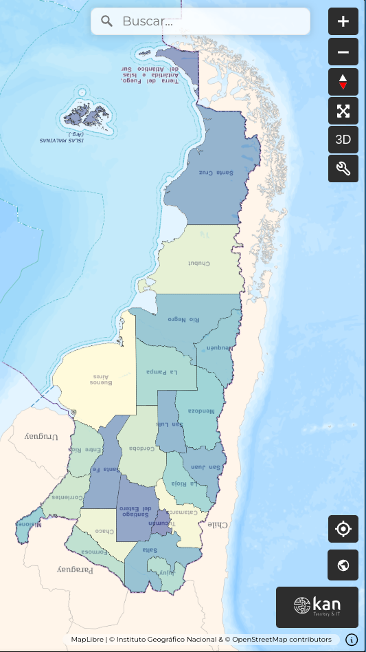
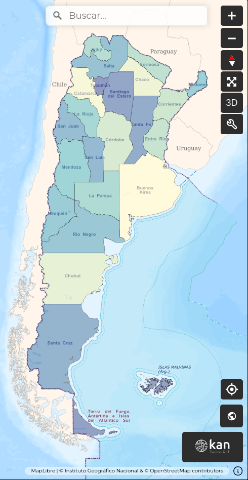

Orientación¶
En ocasiones, el mapa no tendrá el norte orientado hacia arriba, tal como se lo ve convencionalmente en los mapas, y entonces tendrá los puntos cardinales rotados. Para ayudar al usuario a orientarse en todo momento, el visor posee un ícono de brújula que cumple esa función. Como toda brújula, su aguja roja siempre apunta hacia el norte sin importar cuán rotado esté el mapa.
Para que el mapa vuelva a tener el norte arriba, solo hace falta hacer clic sobre dicho ícono.
